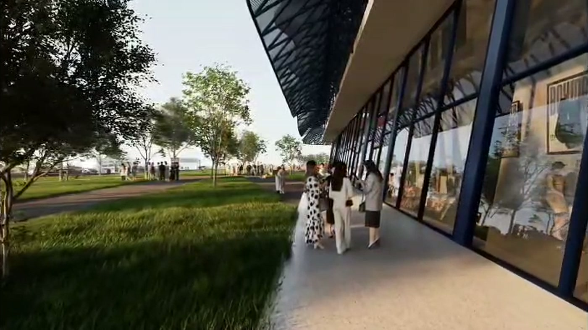

01
Coliseo Multiuso
Equipamiento deportivo·2024
Ver proyecto →

Proyectamos coliseos, arenas, complejos deportivos y pabellones gastronómicos donde la geometría paramétrica resuelve problemas de luz, flujo y estructura sin renunciar a la elegancia.
Cada proyecto nace de un concepto claro y se desarrolla hasta el render fotorrealista y el proyecto ejecutivo, con un control riguroso de cada decisión espacial.

Equipamiento deportivo·2024
Ver proyecto →
Equipamiento deportivo·2025
Ver proyecto →
Equipamiento deportivo·2023
Ver proyecto →
Equipamiento comercial·2025
Ver proyecto →
Espacio público·2024
Ver proyecto →
+15
Años de trayectoria+250.000
Metros cuadrados proyectados+30
Proyectos de gran escala